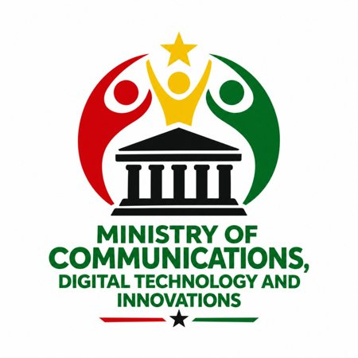
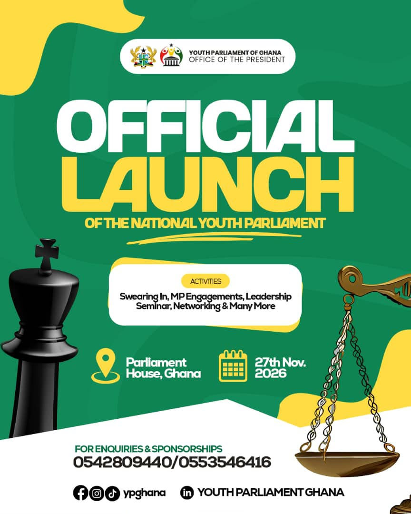

Swearing-In Ceremony
The formal swearing-in of members of the National Youth Parliament of Ghana.

Official event information
National Youth Parliament of Ghana · 27 November 2026 · Parliament House, Ghana
A national youth leadership milestone
The National Youth Parliament of Ghana is scheduled to hold its official launch and swearing-in on 27 November 2026 at Parliament House, Ghana.
The occasion will mark an important moment for youth participation in national dialogue and parliamentary engagement. The announced programme brings together formal proceedings, leadership development and opportunities for connection.

Programme highlights
The announced programme is outlined below.
The formal swearing-in of members of the National Youth Parliament of Ghana.
Engagements connected to parliamentary processes and youth participation in public affairs.
A leadership-focused session intended to support the development of informed and responsible young leaders.
An opportunity for participants to connect, exchange perspectives and build relationships.